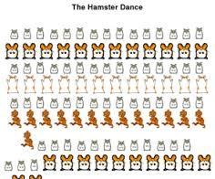
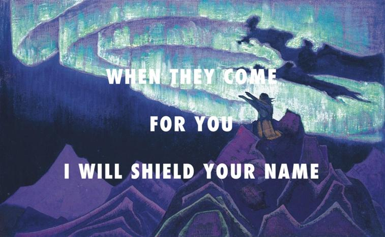
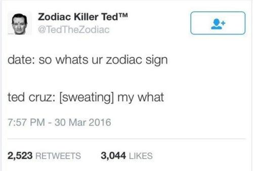
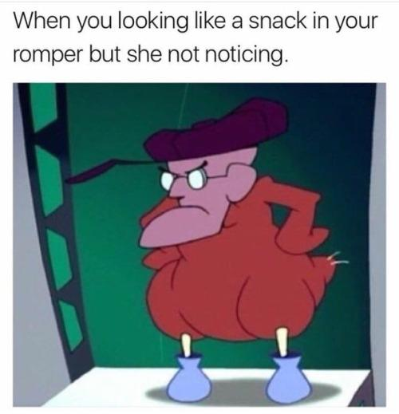

A Brief History of Memes As An Art Form Magda Wojtara
Magda Wojtara
It is 2017 and at this point it is fair to say that anyone with social media or an electronic device is aware of what “memes” are. Recently, there has been some bad press news about Harvard rescinding acceptances over offensive memes posted by students in a chatroom. However, today the focus is on how memes have had a positive impact on pop culture: as a form of art. Many artists are hesitant to refer to memes as “art”, however these attitudes are gradually shifting as the internet age has prompted the rise of internet memes.
Memes were a term originally coined by Richard Dawkins (1976) and is defined as “anything that is a cultural idea that spreads and self-replicates among people.” Today we have internet memes which are, by extension, ideas that are spread via the internet. This can be any medium whether it is gif, viral video or other forms. Some of the earliest internet memes are the “Dancing Baby” (1996) or “The Hamster Dance” (1999). The simplicity of memes has contributed largely to their appeal to such large audiences. But, audiences are fickle and just as quickly as one meme hits the spotlight another grows famous and steals it- the cycle continuing ceaselessly.
There have been several attempts to combine internet memes with fine arts. Such as the work of “Flyartproductions” on tumblr.com. The works feature hip hop lyrics on art and effectively combines the “old and the new.” Another attempt is that of the Mona Lisa Selfie meme. Here, the Mona Lisa is holding an iPhone and doing a “duck-faced” selfie. For centuries, art has been considered something for the elite to understand and enjoy. But with memes we have found a way as a generation to make art more accessible for the general populous. The combination has proved that memes can have both a lasting and momentary impact.
Flyartproductions: Moses the leader (1926), Nicholas Roerich / Ultralight Beam, Kanye West ft. Chance the Rapper, The Dream, & Kelly Price
Another argument in favor of Memes as modern art is that of how they catalyze discussion on topics. For instance, the recent US election spurred its fair share of memes after every move the candidates made. Back in 2015 the “Small Loan of a Million Dollars” meme spurred several viral video reactions. Many stated that he was able to turn millions into billions while many others argued that he was “out of touch” because he was already wealthy and didn’t need to work to get to where he was. The “Bowl of Skittles” (2016) was originally posted by Donald Trump Jr., but it spurred a lot of debate on the Syrian refugee crisis and US involvement. The picture showed a bowl of skittles with the writing “If I had a bowl of skittles and I told you just three would kill you. Would you take a handful? That’s our Syrian refugee problem.” A more harmless meme was that of “Ted Cruz: Zodiac Killer” (2015) while this meme didn’t spur as much controversy; it did manage to provide the election with a hint of comedic relief because of its absurdity.
A more recent meme spree was that of the “RompHim”(2017) movement where guys and gals alike advocated for rompers for guys. This prompted banter on gender norms and whether guys would actually rock this new look.
We can therefore argue that many memes are a medium of social commentary on current events and for that reason are valuable to us beyond their comedic undertones. As we increasingly use memes to channel our thoughts: they have continued their ascent into prominence.